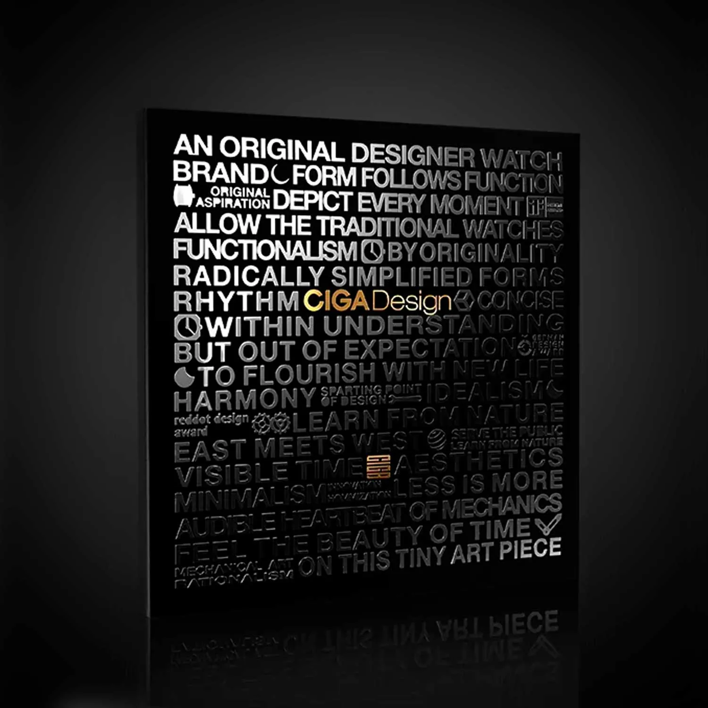
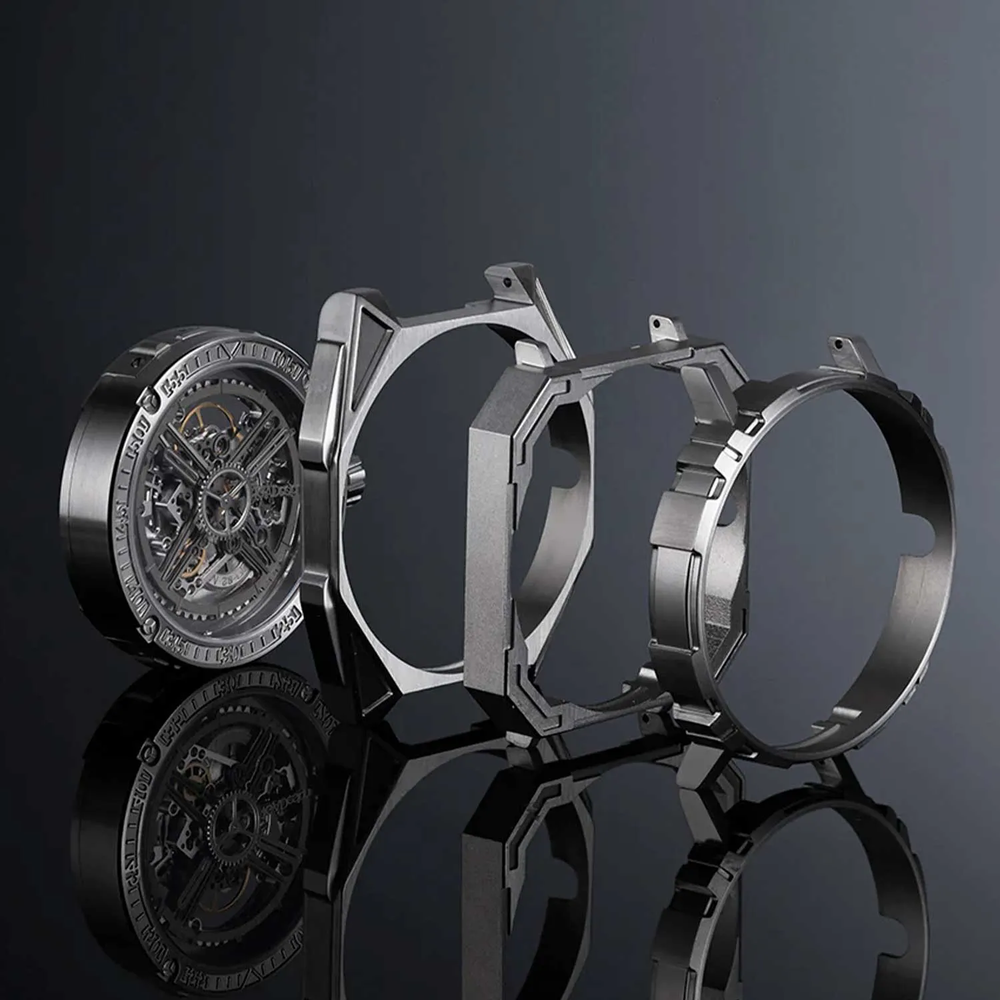
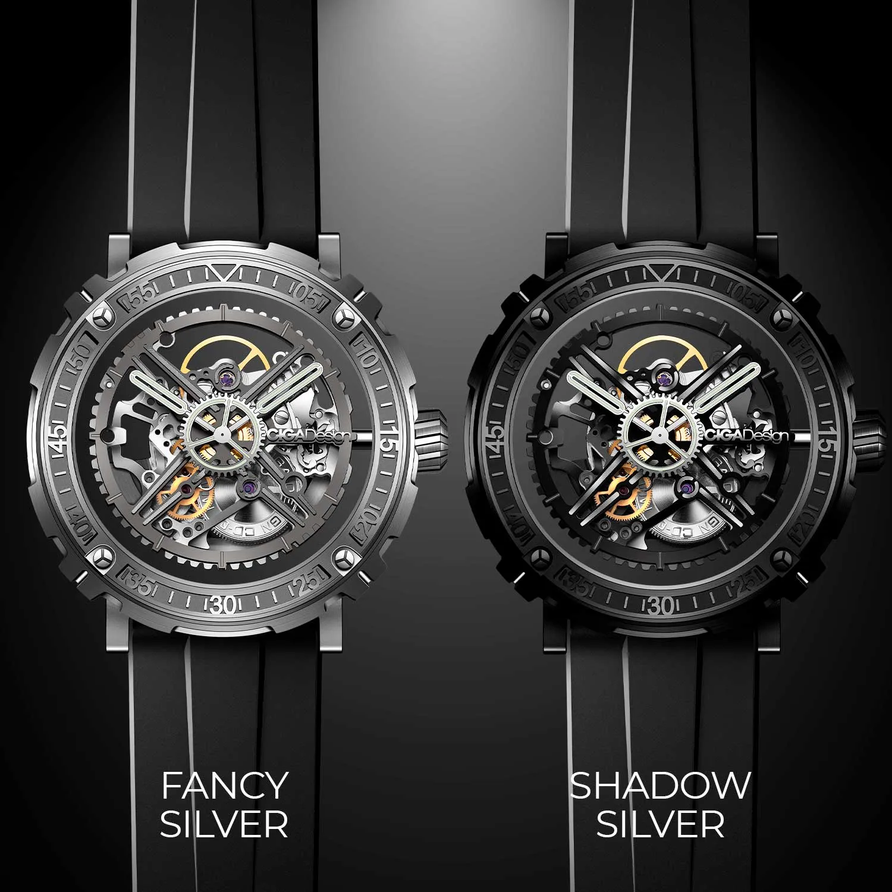
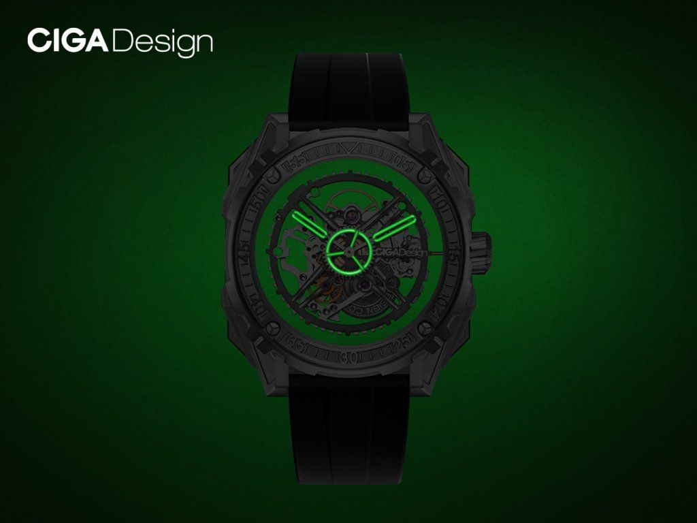
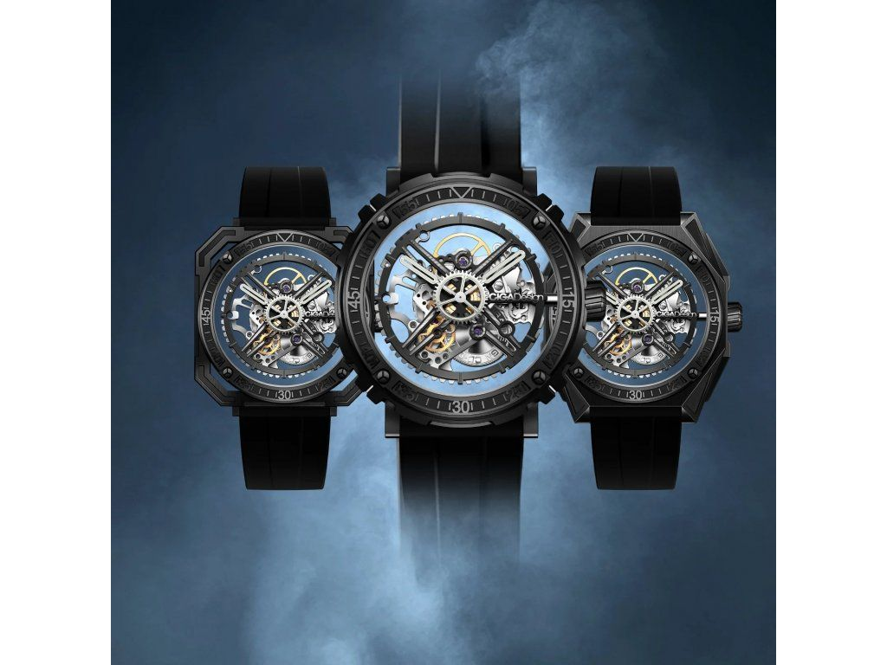

Um movimento, três caixas e três leituras visuais diferentes. O Magician transforma modularidade em argumento real de design, não em truque.
Troca de caixa sem ferramentas · 40h reserva de marcha
O Magician redefine o que é um relógio ao separar completamente o movimento da caixa, permitindo trocar a identidade visual sem trocar o coração mecânico.

O Magician foi desenvolvido a partir de um módulo central com movimento e mostrador que pode ser encaixado em três caixas distintas: redonda, tonneau e quadrada. A troca sem ferramenta é o coração do produto e o motivo pelo qual ele funciona tão bem em conteúdo.
Cada caixa muda a leitura do relógio de forma perceptível, sem obrigar o usuário a abrir mão da mesma base mecânica. Essa coerência é o que torna o conceito interessante de verdade.

O movimento automático CD-02 com 26 joias, 21.600 vph e 40 horas de reserva sustenta o sistema com consistência. Mais do que vender o Magician como curiosidade, a página agora trata o relógio como plataforma modular de fato.
O fundo de safira em todas as caixas preserva a leitura mecânica do produto independentemente da forma escolhida. Isso aproxima o Magician do padrão de contemplação mecânica já trabalhado nas melhores páginas do projeto.
Sistema de encaixe patenteado pela CIGA design, troca de caixa sem ferramentas em menos de 30 segundos.
Três caixas incluídas no kit, redonda, tonneau e quadrada. Cada uma com identidade visual completamente diferente.
Movimento automático projetado para o sistema modular. 26 joias, 21.600 vph, 40h de reserva, um coração para três relógios.
O movimento automático é visível em qualquer configuração, a magia acontece sempre à vista.
Três caixas, um movimento, as especificações de cada configuração do kit 3-em-1.

| Caixa Redonda | 46,2 mm de diâmetro |
| Caixa Tonneau | 46 mm (formato oval) |
| Caixa Quadrada | 44 × 44 mm |
| Espessura (todas) | 11 mm |
| Material das Caixas | Aço inoxidável 316L com acabamentos distintos |
| Vidro | Cristal de safira anti-reflexo |
| Fundo | Transparente de safira em todas as caixas |
| Movimento | CIGA CD-02 automático modular |
| Frequência | 21.600 semi-oscilações/h (3 Hz) |
| Reserva de Marcha | ≥ 40 horas |
| Joias | 26 rubis |
| Resistência à Água | 3 ATM (30 metros) |
| Troca de Caixa | Sistema patenteado, sem ferramentas, menos de 30s |
O segredo do Magician está na experiência de troca e no fato de o conceito realmente mudar a personalidade do relógio. Nesta revisão, o texto técnico foi concentrado nessa ideia para evitar promessas excessivamente grandiosas.
O Magician se vende quando você mostra a troca ao vivo. Esse é o gancho visual mais forte da CIGA design.
O Magician tem o conceito mais demonstrável de toda a linha CIGA design. A troca de caixa em 30 segundos, ao vivo, na câmera, é o tipo de conteúdo que para o scroll e gera compartilhamento orgânico. Use isso a seu favor, e construa a narrativa em torno da ideia de que um relógio pode ter três identidades.
Dez ângulos narrativos para maximizar o impacto do seu conteúdo sobre o Magician.
| # | Direcionamento | Foco Narrativo | Base do Script (Exemplo) |
|---|---|---|---|
| 01 | A Troca que Para o Scroll | Demo ao vivo da troca de caixa | "30 segundos. Sem ferramenta. Três relógios. Deixa eu mostrar." |
| 02 | Três por Um | Custo-benefício, três relógios num produto | "Um investimento. Três identidades diferentes. O melhor negócio em relojoaria." |
| 03 | Patente que Prova | Sistema patenteado como credencial técnica | "O sistema de troca é patenteado pela CIGA design. Não existe igual no mercado." |
| 04 | Redondo para o Clássico | Caixa redonda, uso diário e versátil | "Formato redondo: o clássico que funciona em qualquer ocasião." |
| 05 | Tonneau para o Evento | Caixa tonneau, elegância para ocasiões especiais | "Formato tonneau: para quando o jantar é especial e o relógio precisa acompanhar." |
| 06 | Quadrado para a Reunião | Caixa quadrada, autoridade profissional | "Formato quadrado: presença no pulso para quando precisa ser levado a sério." |
| 07 | 26 Joias que Não Mudam | Movimento de precisão constante em qualquer caixa | "A caixa muda. Os 26 joias, os 40h de reserva, a precisão, continuam." |
| 08 | A Magia é Real | Nome como conceito, transformação | "O mágico transforma o que está na sua frente. O Magician faz o mesmo." |
| 09 | Para Quem Não Gosta de Limites | Posicionamento para indivíduos versáteis | "Para quem não conseguia escolher entre redondo, tonneau e quadrado. Agora não precisa." |
| 10 | O Presente que Impressiona Três Vezes | Presente com alto impacto visual na hora da entrega | "A caixa se abre com três relógios diferentes. A reação do presenteado vale o vídeo." |
Imagens oficiais do Magician disponíveis para uso em seu conteúdo.


Duas leituras de prata: Fancy Silver com alta luminosidade, Shadow Silver com tom mais técnico.
Compre direto no site oficial da CIGA design Brasil. Garantia, parcelamento e envio para todo o país pela JG Importadora.
Descontos cumulativos: 5% no Pix e mais 5% se for a sua primeira compra.
Comprar no Site Oficial usecigadesign.com.br